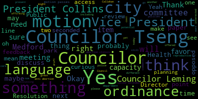
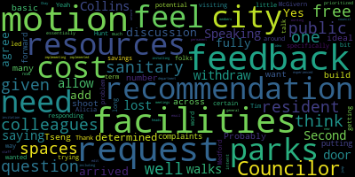
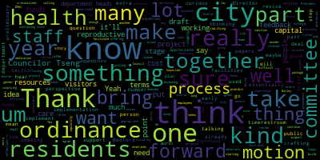
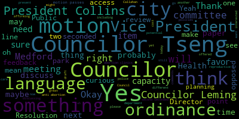
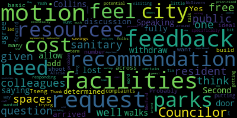
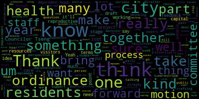

total time: 14.68 minutes
total words: 1865

{kind=link}
total time: 12.72 minutes
total words: 1988
{kind=link}
total time: 2.58 minutes
total words: 322

{kind=link}
total time: 5.71 minutes
total words: 1181

{kind=link}
total time: 1.19 minutes
total words: 206

[Wilworth]: Check mic one, two. Check mic one, two. Microphone check, one, two. Mic check, check, two.
[Lazzaro]: This is Medford City Council, Public Health and Community Safety Committee, October 16th, 2024. We are meeting today to discuss a couple of items. Mr. Clerk, can you please call the roll? Absolutely.
[Hurtubise]: Councilor Callahan, I believe you said you, I believe you said that Councilor Callahan is in traffic. Vice President Collins? Present. Councilwoman? Present. Councilor Tseng? Present. Chair Lazzaro?
[Lazzaro]: Present. Four present, one absent, meeting is called to order. We will be discussing two items today. The first is 22-379 offered by Councilor Tseng and Councilor Collins, Resolution of Draft and Ordinance to Secure Rights to Gender Affirming Care. And that will be actually in conjunction with 22-453, which is a former item offered by President Bears, Vice President Collins, and former Councilor Morell, resolution to discuss potential ordinances and policies to protect reproductive rights. So these are two items that I will ask Councilor Tseng to summarize for us and then we can get started discussing. We have also a draft that Councilor Tseng shared with the committee today. Councilor Tseng.
[Tseng]: Thank you. Thank you so much. As we know, In the last few years, reproductive rights and gender affirming care, the rights to access those two forms of health care have been particularly at stake in our country. Particularly worrying is that even though we live in a state that does a lot to protect these rights, much of what we're seeing nationally is requests for municipalities and states to carry out out-of-state orders, so orders that are not from our own state, from authorities not here, to arrest, to get sent information, to prosecute individuals who are seeking or providing gender-affirming care or reproductive health care. In the context of all of that happening in the country, uh, Councilor Collins and I, as well as President Bears, then President Morell, and Councilor Collins. We had a bunch of, um, resolutions on the City Council agenda to have our committee discuss what we can do to best safeguard those rights here, um, in Medford, um, and to make sure that, you know, we're following Massachusetts laws, that we're executing Massachusetts laws, that we're not, um, putting ourselves in a situation where we're forced to carry out the laws of a state that we don't belong to. There are a lot of different ways to go about it. The main focus the last time that this committee met on this subject was focusing more on the police involvement with the issue. And so really honing in on the question of arrests and cooperation in that process and essentially establishing a non-cooperation process. Now, at that meeting, I presented a draft. I think the feedback that I got was mostly that it looked like a good draft. There were some questions that counselors had, some people that counselors wanted me to reach out to. So in the meantime, I updated the draft in responding to those questions, as well as reached out to the health care providers in Medford, notably Tufts and Harvard Vanguard. I believe Harvard Vanguard was the one that didn't have anyone getting back to us. I tried a bunch of times, but I actually did have a sit down with Tufts Medical and their public affairs team, public policy team, and they were fully in support of us having an ordinance like this. I think on top of that, it's worth noting that I don't know if all the counselors received this. This wasn't sent to the council as a whole. I know this was just on an email list from the top reproductive equity rights group in Massachusetts. They asked that even though there are state measures in place to defend reproductive health care and gender affirming care, they asked municipalities like us to explore ways to stand up for reproductive freedom here in communities like Medford, particularly through ordinances and bylaws. And so this draft that we have in front of us is essentially an extension of that effort to ensure safe and fair access to reproductive health care and gender equity care. The draft that we have before us is a slight expansion upon what we had at our last committee meeting, particularly given the second resolution that you read out, which broadens the scope that this committee can work with, and in response to some suggestions from residents and activists in the area as well. And so what I've done is I've basically recrafted this draft with provisions about their access to information, because one of the other problems a lot of municipalities are seeing, especially with regards to abortion care, is the popping up of anti-abortion clinics, which essentially what they do is they sell themselves as reproductive health clinics, they get the more vulnerable populations come in to use their services. They don't recommend them for the necessary health care procedures, including abortion, but instead preach a certain message. And this is of a lot of concern because a lot of this behavior is quite predatory. And so this is something that a lot of Massachusetts municipalities have started to take action on, to explore ways to put language in their ordinances about fair access, about seeing what we can do to prevent certain centers like this opening up, and to distribute good information, especially in conjunction with our Board of Health. And so essentially that's the draft that we just got that Clark Herbie's just distributed via email and in print to us. I, I wish I had a chance to get to the sooner so we could review the language here. But I was thinking we could, we can take motions at the end, but I was thinking to move that counselors send feedback to chair Lazzaro and me before our next public health committee meeting on the ordinance language here, as well as Well, I'll just let that motion stand there. And then I was thinking maybe we want to discuss who we want to consult further and if we want to send this draft out to anyone.
[Lazzaro]: Thank you. I believe we still need a response from a police chief Buckley and the board of health director, Brian O'Connor. I would be happy to reach out to them. I'm not sure if we need a motion for that. Maybe not. But I can't make that motion anyway. I don't need it. Okay. So I was just skimming. I'm not sure where in the language, if there is anything in the language that sort of mentions the anti-abortion clinics, or if we have the capacity to put something like that in an ordinance that would prevent a facility like that from opening, or if we would be able to do something like that, but I would be curious to hear your thoughts on that.
[Tseng]: Yeah, I think that's a great question. Essentially, I've gotten a lot of this language from East Hampton, which is kind of the leading municipality on the anti-abortion stuff. I'm taking a quick skim through now. I think much of this is what they have regarding those centers. I can study that further, and then if there is a way to do that, I can integrate it into a future draft.
[Lazzaro]: It may be something that we want to, when we go line by line on an individual basis and then come back and talk about it, it might be worth looking at, it might just be something I haven't had a chance yet to go through with a fine tooth comb, which is fine. I also think it might be something that we may have to ask legal about our capacity for what we would be able to, what we can say to a business that wants to come in and what we can't. But anyway, I think this is a great start. I would agree that sending feedback with another meeting and maybe scheduling another meeting that would be probably next month and see if we can get some more solid plans in place at that point would be great. Okay. Are there any other comments from, or do you have more that you want to say?
[Tseng]: I have more ideas to bounce around just as a committee before I dropped any further language. But if people have comments on this ordinance, let's stay on this for now.
[Lazzaro]: Okay. Any further comments from councilors? Okay. The motion Councilor Tseng mentioned was that councilors send feedback to myself and CC Councilor Tseng before our next meeting. Do we have a second?
[Leming]: Second.
[Lazzaro]: Seconded by Councilor Leming. All those in favor, oh, we lost Councilor, oh, there they are.
[Leming]: Speaking of.
[Lazzaro]: I'll just hold on that.
[Leming]: As we were saying, we lost Councilor Collins. She walks in the door.
[Lazzaro]: Sorry, there was traffic. I understand. No problem.
[Leming]: Would we withdraw the motion so that we can allow for more discussion from the colleagues who just arrived? Yes.
[Lazzaro]: Yes, I will withdraw the motion. And so just to update the councilors that just arrived, we have been talking about the drafted language. Do you have the language from Councilor Tseng or have you, you may not have had a chance to look it over because it was really fresh.
[Tseng]: I can give you my copy.
[Lazzaro]: There's some, we have some up here.
[Tseng]: Trailers are looking through the draft. I do realize that I did actually about the few sentences on Yeah, I did find it so I can I can also redistribute a new copy an updated copy with that Yes, we can also just bundle or motions, yeah Okay, so
[Lazzaro]: to review. Councilor Tseng has been going over a summary of where we're at with the ordinances about gender affirming care and reproductive health care in Medford, including non-cooperation of police if there's any outside of Massachusetts entity trying to enforce laws that are not applicable in Massachusetts? Any anti-abortion clinics that may be trying to open in Medford? What would be our capacity? We discussed what would be our capacity as a city council to attempt to prevent or enact a rule against a predatory business like that opening, and these are, we're just at a discussion stage at this point, but Councilor Tseng did distribute some language that would be the motion on the floor at the moment is from Councilor Tseng, seconded by Councilor Leming for the members of the committee to review the language as written now, including a couple of sentences that Councilor Tseng will add in about the anti-abortion clinics that are not currently in here, but he will add. And if you can review the language and send thoughts or edits to myself and see what the councilors are saying before our next meeting, then we can keep moving forward. But it's not, we're not at the stage yet of obviously a line by line review of the ordinance as a committee. Yes, you may.
[Hurtubise]: This is just a suggestion, but I'm thinking that perhaps to encourage compliance with the open meeting law, perhaps the edits of the feedback should come to me and I can distribute to the committee.
[Lazzaro]: Thank you. That would be better. Yes, please. Please do that.
[Hurtubise]: I would change the motion accordingly. Thank you. Please do that.
[Lazzaro]: Yes, yes. I will also reach out to the Director of the Board of Health and the Chief of Police for their feedback on the language thus far, because we haven't heard from them yet. And this is two papers that were in the past two sessions or past session that we're reviewing. So now you're all up to speed. Do we have any comments from, yes, Vice President Collins?
[Collins]: I'd like to thank Councilor Tseng for moving this project forward. I know, as was stated, this is something that the Council has been talking about for a long time, at least since 2022, when I know then President Morell was one of the voices calling out strongly to make sure that Medford was doing all it could do to protect reproductive reproductive health care is wonder, as well as gender affirming health care. And of course this is a very new draft and we're going to continue to revise this in committee but just for my initial review. I think that. One of the parts of this that really stands out to me that I hope that residents kind of, that I think is very salient and I hope that residents, you know, hear about and understand in this proposed ordinance is the section and again, like draft section C that says no city resources, materials or funds shall be used to facilitate or aid any person seeking to prohibit criminalized sanction, et cetera, the person seeking this kind of care. And I think that's really the point to me here. is that we, I think we know implicitly that it's not appropriate for city resources to be used towards such, you know, essentially extra legal purposes. And that includes the time of our city employees as well. So I'm really proud that we're crafting a policy that enshrines that, and I look forward to continuing to revise this in committee.
[Lazzaro]: Thank you. Great. On the motion of Councilor Tseng, seconded by Councilor Leming. All those in favor?
[Tseng]: Aye.
[Lazzaro]: All opposed? The motion passes. The next item for tonight is item 24- Oh, just quickly on that.
[Tseng]: I know the paper from President Bears, then President Morell, and Councilor Collins is quite broad policy-wise on what our committee is authorized to do. I think this is just one way of thinking about reproductive health rights. I think there are other ways for us to consider, like, I mean, even things as basic as ensuring access to menstrual health products and bathrooms in the city. So I just wanted to put that out there as something that our committee can discuss while this paper is still in committee. There's also another thing that activists have reached out to us about potentially drafting an ordinance on is, give me one quick sec. a local ordinance to ensure pharmacy compliance with the statewide standing order for emergency contraception. And I was wondering if that's something that our committee would be interested in discussing while we have this paper in our committee. And if so, I can come back to the model ordinance at the next meeting.
[Lazzaro]: The question was, would the committee be interested in taking up a paper on ensuring access to enshrining in an ordinance something of pharmacy compliance with maintaining access to emergency contraception? Is that? Yes, emergency contraception. Would that include like Misoprostol, Mifepristone? I believe so. Yeah. Okay. Yes. So that would be like abortion pills. Yes. Yes. Councilor Callahan.
[Callahan]: Just clarification. So it sounds like this is to ensure that we are in line with state law. So state law already has changed, and we want to have something explicitly supporting the state law?
[Tseng]: So I believe the state, um, the state action is actually via executive order. Um, and so it's just to make sure that we are, um, it's to make sure that we're aligning ourselves with the executive order, but also making sure that if that executive order is reversed one day, um, for God knows what reason, um, we still have the protection in our city.
[Callahan]: Thank you.
[Lazzaro]: I see a thumbs up, which is not a spur. I see a thumbs up. It sounds like there's some interest. Yes, I mean, I am interested in it from the chair. I mean, there's like a less of a, I don't know, I can't make a motion. It's a little bit more casual from the chair of the committee. But yes, I mean, I would be interested in doing something like that. I'm curious about, I am still curious about like what our capacity is as a city to What our capacity is as a city to do anything that wouldn't be already in trend in state law, but I do also think that there is value in affirming something that is right and correct. So yeah, I would be in favor of discussing it for sure. So I think to that end, yes. Vice President Collins.
[Collins]: Thank you, and sorry, just a clarifying question. I think you already described this, but is the point of that new idea to ensure that pharmacies are complying with providing all of the reproductive health-related medication? Yes. Okay, cool, great. I mean, I think that seems part of the theme of these three papers, so I'd be happy to take it up as part of the package.
[Lazzaro]: I think so, especially because at a local level, like we have many pharmacies in town, that would be a very localized thing to do, so that makes sense to me.
[Tseng]: In that case, I'll motion for me to present some draft language for an ordinance before our next meeting to this committee.
[Lazzaro]: Would it be something that you would need to present a paper to the regular committee to then have it reviewed?
[Tseng]: I think it fits under the second paper that you read out.
[Lazzaro]: The 22-453 resolution to discuss potential ordinances and policies to protect reproductive rights. Yeah, beautiful. It absolutely falls under that. So on the motion of Councilor Tseng to draft language for an ordinance to ensure pharmacy compliance with the state executive order on emergency contraception. Do we have a second? Seconded by Councilor Leming. All those in favor? Aye. Opposed? Motion passes. Are we ready to jump to the next paper? Okay. 24-470, offered by Justin Tseng, City Councilor. Resolution to discuss the installation of sanitary facilities in public spaces. Be it resolved by the Medford City Council that the Public Health and Community Safety Subcommittee meet to consider potential ordinances, policies, and regulations to strengthen the protection Oh, no, that's the wrong one. I'm sorry. There's three. Discuss the possibility of installing sanitary facilities and public spaces, including in our parks. Councilor Tseng.
[Tseng]: Thank you. For this paper, I just wanted to start with a broader conversation about the types of questions we want to be asking, the type of data we might want to collect with regards to this question. Because I know there's so many different ways to go about it. I know there are a lot of concerns with costs as well. And so I was thinking it might be good for us to just meet, talk about some general questions we might want to be asking, and then either me or Chair Lazzaro, we can reach out to department heads and community stakeholders to discuss these questions. We can also create a list of people we might want to invite to a future meeting.
[Lazzaro]: I think that one of the first things we'll have to consider is the cost and where, how to begin. Where do we begin? Yes, Councilor Callahan. Councilor Leming, and then Councilor Callahan.
[Leming]: This is just to add on. I fully agree that the cost of these facilities needs to be determined. Probably also the very basic question of which parks and what would be an ideal number to shoot for across the city. How many of these facilities do we want to build?
[Callahan]: Thanks. So I think in addition to the cost, which is important, I would love to have, you know, either if you have already done some of this research, possibly we do more research into the need in the community. And, you know, I'm sure you've already thought of this, but we may want to reach out to the Disabilities Commission, we may want to see if we can reach out to Mothers with newborns and small babies because I just remember from that time period that like finding a bathroom that had a changing space was like absolutely crucial and if I, you know, couldn't find one, it's like very bad. And maybe we can think of other, you know, groups of people that might have special needs or not even that special, but like, you know, some understanding of what the need is in our community. And I think that would also help us sort of make the case for the cost of these going on. So.
[Lazzaro]: I would suggest the Medford Family Network would be a good starting point. I know they even have playgroups in the park, and they go to different parks, and probably they, Miss Andrea, I think, leads those. I can't remember her last name. But I'm sure they'll have some feedback about that. But for sure, probably Medford Family Network, Frances Nwaje, good starting points. Disabilities Commission, yes. Councilor Collins, are you? Is your hand up?
[Collins]: Oh, sure. Just to jump in with, again, preliminary reflections. I agree. I think this is, you know, obviously there's a lot of groundwork to lay in terms of Should we go forward where? That's kind of step number one in terms of visioning. Step number one in terms of implementation would be thinking through those questions of, how would we bring this about? How much would it cost? How much would it cost to build? How much would it cost to maintain, including putting another thing on DPWs? and using that people power. That's not at all to say that I think we shouldn't do it because it'll take extra resources. I think that it's a really good idea. I think it's a really nice thing to offer to our residents and visitors to this city and to a lot of residents and visitors, it's also a necessary thing that we should be offering. And if this is a difficult project to implement, if it could take five to seven years to put together, maybe it'll take shorter, but maybe it'll take five years to put together. the will and the buy-in and the plans and the money to make this sustainable, then it is good that we're starting now. Thank you.
[Leming]: It's just a question for Councilor Tseng what resident when you're putting this forward, what resident complaints were you specifically responding to? Was it folks that were visiting certain parks who wanted this? What was, could you just talk a little bit about the feedback you were getting that led to this?
[Tseng]: I think some specific parts were mentioned, but it was more of a general conversation that I was having, particularly with some moms. But moms in that situation where they need to take care of their newborns. But I've also recently talked to some people who are in charge of recreational groups in Medford who spend a lot of money on their own to bring in porta-potties. Um, stuff like that. And so, um, they're interested in seeing what the city can do to help them shift that cost as well. Um, yeah.
[Lazzaro]: Uh, I would be curious to hear from, uh, Director Hunt from the planning and permitting, or planning, uh, no, that's the committee, planning department, planning sustainability department, and, um, Director McGivern from DPW or DPW as well, because just of their awareness, their institutional knowledge of the city and this is deceptively a large undertaking. It's the sort of thing that seems like it would be simple and is actually a huge, a huge project. But again, I think Vice President Collins had it hit the nail on the head that it's just because something's hard or feels overwhelming in the moment doesn't mean you shouldn't start. So it still needs to be done. And it's just a fundamental human thing. So we need to try. So basically we have to talk to every department head in the city. We have to spend a lot of money probably, but I think it will be, I think there are ways to do it that are more efficient and reasonable and if we take our time and do it right then it'll make more sense. Councilor Leming.
[Leming]: Thank you. On that, I would motion to request feedback on the cost, potential cost savings and need for these sanitary facilities in public spaces around Medford from Tim McGivern and Alicia Hunt. as well as their recommendation, as well as their long-term recommendations on this problem.
[Lazzaro]: Is this like a cost-benefit analysis kind of?
[Leming]: Yeah, I was trying to think of a way to word it. But essentially, given the resources, the intent of it is given the resources the city has now, how much do they think that their resources should be prioritized to implementing this?
[Tseng]: I'm not sure that Commissioner McGibbon or Department Head Hunt or Director Hunt are in the best positions to provide the answers to that question, just because I don't think there is that much data out there right now about the cost and benefit. The thing is we could go with a port-a-potty system, but we could also go with other models, which I know some other city staff have been kind of chatting about here and there. I think maybe if you reword the motion just to be talking more about city staff in general, that'd be helpful. Cause I'm just not sure that they're the ones in the best positions to answer. I know we'll probably want to loop in the rec department as well. So director Bailey, on that effort too.
[Lazzaro]: Vice President Collins.
[Collins]: Thank you. Yeah, I support the motion, the amended motion. And just to further that point, I think that we're at early enough stages here that I'd be curious to hear perspectives from, Councilor Tseng mentioned Director Bailey. I also suspect that this is something that Director O'Connor, even if it's slightly more out of her purview, would have some perspective on as this is a health health issue and engages with. I'm sure that the prevention and outreach folks have some, you know, they deal with a constituency that would be one beneficiary of these facilities in addition to many, many more. All that to say, gosh, there's so many ways that like a CBA would go with this. I mean, I was thinking like this might be the type of thing that we'd want to get the Chamber of Commerce's feedback on because I know that it is kind of a pressure that Main Street businesses have to deal with it. We want your patronage. We don't necessarily want to be a restroom facility for people in public, though they need one. So I'd just be really curious to put this pardon me, um, to as many city staff as possible at this early stage because I wouldn't be surprised if we get a lot of support from a lot of different departments. Thank you.
[Lazzaro]: Okay, so, as, as, so, so, Councilor Lemings motion, but. city staff rather than specific.
[Leming]: I'm just unsure how that would be implemented. Would it be an email to all city staff and then request a general request for feedback?
[Lazzaro]: Vice President Collins?
[Collins]: Yeah, I think that we can. I've certainly made many motions in the past at committee meetings that present a idea proposal or a draft ordinance and send it out to department heads and encourage them at their discretion to get feedback from staff in their department or to just give feedback as department heads.
[Lazzaro]: Yes.
[Hurtubise]: Just as a clarification, that would generally go Depending on the exact wording of the motion, what would generally happen is that a copy of the committee report with the relevant motion highlighted would go to the chief of staff with a request that it be distributed to department heads or certain other people, depending on what the motion says. But that's how it would generally go out to other team members in the administration.
[Collins]: Thank you. And I'll just notice for the edification of counselors that haven't done a ordinance process precisely like this before that for me in the past, at least, um, that process is often paired with simply, you know, as as sponsor of the ordinance reaching out to department heads one on one to have conversations about them.
[Lazzaro]: Is that acceptable? Yes. So the, um
[Leming]: new wording of the motion could be, and feel free to feel free to jump in if any of my more experienced colleagues have recommendations to edit it, but a motion to request feedback from department heads on the idea of installing permanent sanitary facilities in public spaces, including our parks, with the invitation to have one-on-one meetings with council members if they feel the need to. Okay.
[Lazzaro]: Do we have a second?
[Tseng]: I'll second.
[Lazzaro]: Seconded by Councilor Tseng.
[Tseng]: Before we end discussion though, I just wanted to say, um, um, I wanted to reiterate that this is, as other Councilors have said, this is just the start of a long process. Um, I think right now, um, the question, there's a question of who has what information, what's the best way, um, to get all that information. And one of the roles of the City Council that I see just even broadly, not just with this issue, is that I think one of our jobs is to bring together that information where we can. And I know a lot of this information lies outside of city departments as well, so I'll keep reaching out to non-city staff, members of the community who might be able to help us get some data, get some idea of where our priority parks are, how much they're already spending on stuff like this. So I can keep working on that. I think my vision for this is even if this is not the most feasible project in the short term, if we can collect that data and if we can put together a roadmap to get to a place where we can implement it, maybe even get to the point where we can craft together a proposal to present to the mayor during budget season, I think that's my goal at least with this item.
[Lazzaro]: Vice President Collins.
[Collins]: Thank you. Yeah, I appreciate the words from Councilor Tseng. And I also just want to note, again, we're talking about something, a project that we're at the very, very preliminary stages of, especially with the restroom facilities and public spaces, which is, you know, more logistical than just us crafting an ordinance and working with city staff to implement it. But also, this is part of a story tradition of elected and city staff working together to bring online what are essentially logistical or capital expenses, which is a, you know, usually a multi year process, and we've approved some cap. capital expenditures from our stabilization funds recently that are kind of, you know, kind of tell the end of that story where these capital expenses have been requested and advocated for and discussed and budgeted for and plan for for years and then eventually we get the, you know that the planning and the funds come together and we're able to them together and make an expenditure and bring something online. And in both cases, it's something that we know that we need. It's something that pertains directly to the existing needs of residents, and it takes a few years sometimes to bring it into implementation. But I just see that as part of that same process. So again, I appreciate Councilor Tseng for bringing this forward, and I think that our discussions about this topic to make sure that. Um are well worth. It will be well worth it to residents and visitors to the city. Um and the same for the ordinances that we're working on in concert to make sure that, um, people in Medford have fallen unfettered access to the rights that they already have. Thank you.
[Lazzaro]: Thank you. I do Thank you. Mr. Wilworth.
[Wilworth]: I get Chuck Wilworth 32 Bow Street. I had spoken with counselors saying before, um, the president of the board of Medford Youth Girls Softball, and it is a big part of our budget is well over 10% of our budget to put fortified these in the various fields we play at. So, um, we would
[Lazzaro]: Thank you for coming and speaking on behalf of that. We appreciate you taking the time. I do, another thing to note is that I've observed that some parks have port-a-potties at them. I'm not sure who pays for them, why they're there at some times of the year and other times they're not. It must be some privately funded, maybe it's an organization like Medford Youth Soccer, maybe it's the softball. Yeah, it's probably different times of year. privately funded, but it's inequitable because it's at different places, and then you have access to it sometimes, and then sometimes you don't. So just something to keep in mind. Many parts of the city are privatized right now, and if there's an opportunity for us to explore ways that we can give access to folks in the city publicly, then maybe we should explore that.
[Tseng]: Yeah, I'm totally in agreement about the equity point. I mean, especially with so many groups in our city using stuff like this. There are groups out there who also just can't afford to have a resource like this. I think, even once I passed that just bigger picture. Thank you Chuck for hopping on this call. I think government in general has a responsibility to figure out how we can lower the costs that private residents are spending on things as well. And so, you know, If one recreational group is spending that much and another recreational group is also spending a lot of money on this, I think it does make sense for government to step in and say, we're gonna provide this resource and it's gonna cost all of us as a society less.
[Lazzaro]: Right, pennies on the dollar compared to what it would cost one organization. On the motion of Councilor Leming, seconded by Councilor Tseng, all those in favor? All opposed? The motion passes. Do we have any other motions for this paper before... Any other motions on the floor? Yes, Councilor, Vice President Collins.
[Collins]: I would just motion to keep all papers in committee and adjourn pending further comment. Second.
[Lazzaro]: On the motion, Vice President Collins, seconded by Councilor Leming. All those in favor?
[Tseng]: Aye.
[Lazzaro]: All opposed? Motion passes and the meeting is adjourned. Thank you, everybody.
|
total time: 14.68 minutes total words: 1865  |
total time: 12.72 minutes total words: 1988 |
total time: 2.58 minutes total words: 322  |
total time: 5.71 minutes total words: 1181  |
|
total time: 1.19 minutes total words: 206 |
|||